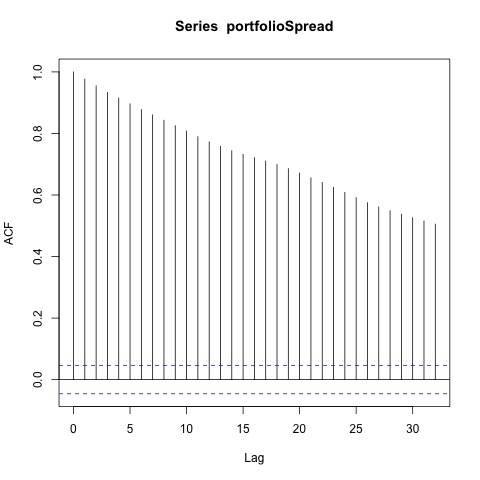
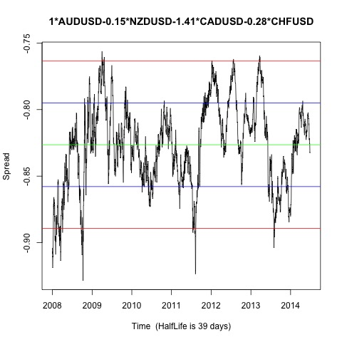
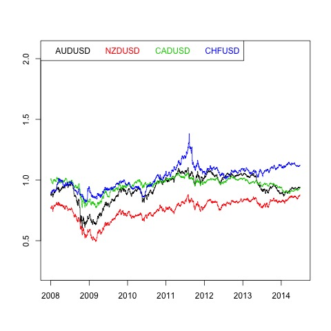
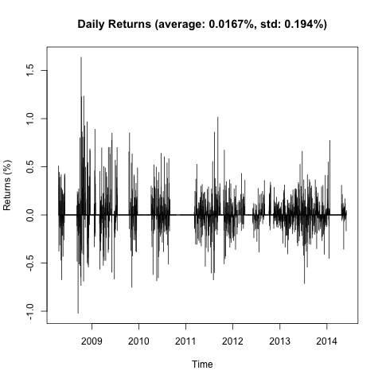
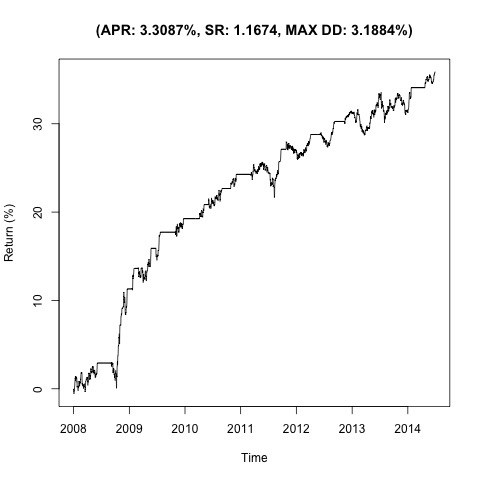

Johansen-Procedure "" "10pct" "5pct" "1pct" "r <= 3 |" 1.1 7.52 9.24 12.97 "r <= 2 |" 4.35 17.85 19.96 24.6 "r <= 1 |" 20.52 32 34.91 41.07 "r = 0 |" 50.72 49.65 53.12 60.16 "AUDUSD.l2" "NZDUSD.l2" "CADUSD.l2" "CHFUSD.l2" "constant" "AUDUSD.l2" 1 1 1 1 1 "NZDUSD.l2" -0.15 -10.79 -0.25 -1.95 -2.69 "CADUSD.l2" -1.41 -2.97 -0.4 0.86 2.13 "CHFUSD.l2" -0.28 10.07 0.47 -0.13 0.07 "constant" 0.82 -0.3 -0.82 -0.06 -1.17
Augmented Dickey-Fuller Test p-value 0.01    